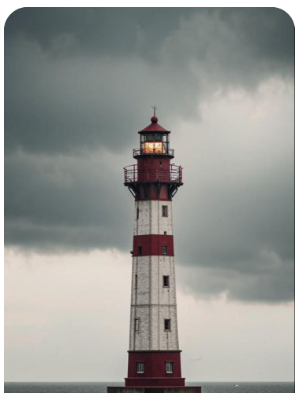
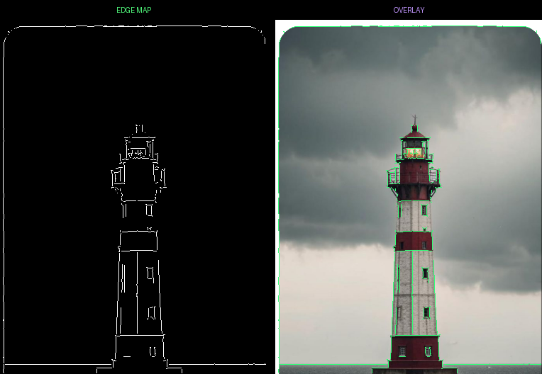
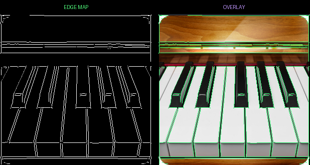
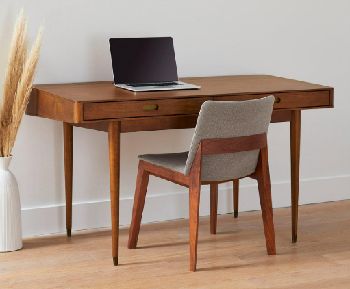
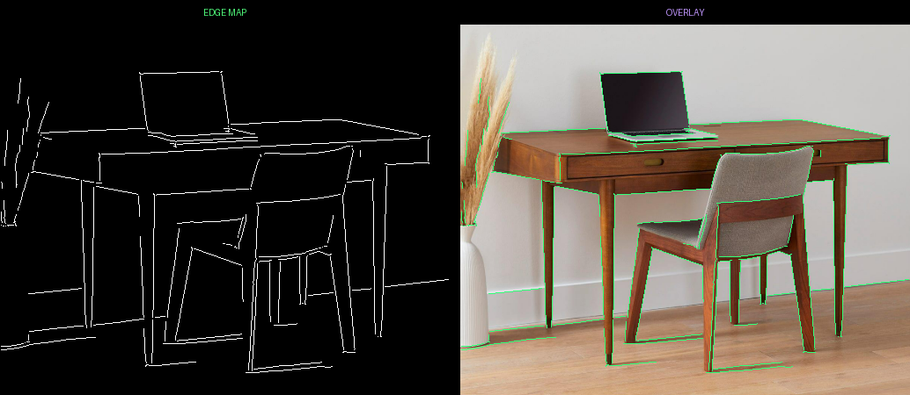

Edge Tracer
Application Overview
The Edge Tracer interface loads an image and runs a pure NumPy Canny pipeline to create an edge map and overlay result. Thresholds are set automatically so users can focus on the output without manual tuning.

Before and After: Lighthouse
Before

After

Before and After: Piano
Before
After

Before and After: Desk
Before

After
